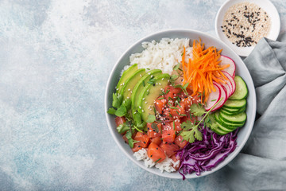

Odin Foods
Home
TOFU RICE BOWLS

Description
Feeling like some healthy take-out but don't want to leave home? This one is deceptively easy and could be
considered the entry level for meals to impress guests!
Ingredients
- 1 cup Basmati rice
- 350g Tofu
- 1x Egg
- Kewpie sesame sauce
Plus your choice of:
- 1/2x Red onion
- 1x Carrot
- Frozen or fresh edamame
- Handfull of Mushrooms
- 1x Chillie
- Handfull of Coriander
Method
- Place 1 cup of rice and 2 cups of water into a pot and bring to a boil. Reduce heat to a simmer and start a
timer for 10 minutes. Then remove from the heat and sit for another 10 minutes
- While the rice is cooking crack the egg into a pan on medium heat. Break the yoke as is goes in and mix it
into the egg white.
- While the egg is cooking chop the next items to cook depending on your final ingredient selection.
- Start cooking the next ingredient. Place the egg on a chopping board and cut it into approx. 0.5cm squares. The exact size and shape does not matter.
- Chop the final raw ingredients or grate the carrot. As each ingredient is completed, place it neatly by itself in the serving location.
- Chop the chillies, corriander, or other topping and let your guests know the meal is almost ready
- Serve with the rice first and allow each guest to portion their own cooked and raw ingredients. Finally douse with Kewpie Sesame sauce. Don't be shy!